Mejor película
CODA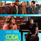
Mejor película de animación
Encanto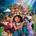
Mejor película extranjera
Drive my Car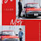
Mejor director
Jane Campion: El poder del perroMejor actriz
Jessica Chastian: Los ojos de Tammy Faye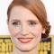
Mejor actor
Will Smith: Rey RichardMejor actriz de reparto
Ariana DeBose: Amor sin barreras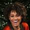
Mejor actor de reparto
Troy Kotsur: CODA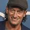
Mejor canción original
No time to die - billie Eilish, Finneas O'connell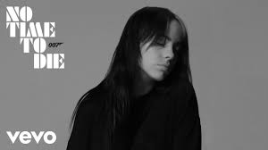
Mejor documental largo
Cuando la revolución no pudo ser televisada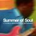
Mejor documental corto
La reina del baloncesto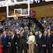
Mejor cortometraje
The long goodbye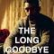
Mejor Cortometraje Animado
El limpiaparabrisasMejor Fotografia
Duna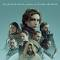
Mejor guión original
Belfast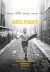
Mejor guión adaptado
CODAMejor banda sonora
DunaMejores efectos visuales
DunaMejor maquillaje y peinado
Los ojos de Tammy Faye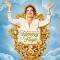
Mejor diseño de vestuario
Cruella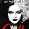